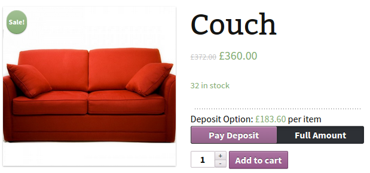

Important note
Please note that the final deposit amount will be affected by other factors such as Multiply by Persons fields, or global settings such as tax handling settings ( which will be explained later in this documentation ).
Thank you for purchasing our plugin. If this document doesn't answer your questions or if you have any customization requests please feel free to submit a private ticket in support forum.
WooCommerce Deposits is a premium WordPress and WooCommerce plugin for handling partial payments. Customers pay a fixed price or percentage up front. You can also force a deposit. WooCommerce Deposits is fully compatible with the WooCommerce Bookings plugin, allowing you to collect deposits on bookings as well as other products.
Make sure your WordPress website and WooCommerce is set up properly and you will be able of starting using this plugin directly
After purchasing this plugin, the first step is to download te package from CodeCanyon. You can find the item in your Downloads page, click Download button next to plugin name All files & documentation
The downloaded file will include documentation, license and zipped installable file, unpack the entire package after download is completed
You can complete the installation in either of the following two ways:
WordPress Plugins Manager : Please go to Plugins >> Add New, click on Upload Plugin, select the zipped plugin folder called WooCommerce-deposits.zip and press Install Now
FTP Upload : unpack zipped WooCommerce-deposits file, then upload unpacked folder to /wp-content/plugins/ folder in the WordPress installation folder on your hosting
Now that plugin is all set, we can proceed with adding deposits.
Plugin default configuration is to work as product-based, where deposit settings has to be set for each product and deposit selection button will be displaying on each single product page.
Plugin can also be switched toCheckout Mode and it will display product option as part of checkout form, deposit will be applied on cart total, we will explain Checkout Mode configuration in a later step.
To set a deposit options for a product , open products manager and select a product or create one if you do not have any
When product page is open, you will find a new tab in Product Data section, named Deposit

This is where you can set up deposit options for selected product, here's a description of what you'll see the following fields:
Please note that the final deposit amount will be affected by other factors such as Multiply by Persons fields, or global settings such as tax handling settings ( which will be explained later in this documentation ).
Once you set a deposit amount, check Enable deposit and save your product. You will now see a Deposit section in the product page:
If a deposit is set for a variable product, deposit amount will update dynamically when user changes variations.
When a customer adds product to cart , this is how an item with deposit would look like in cart :
If you do not prefer to calculate deposit based on products, you can switch plugin to Checkout Mode from plugin settings.
When Checkout Mode is enabled, Deposit selection slider will be displayed in checkout form
Now that we have an order with deposit, i is important to understand the logic of partial payments added by plugin for smooth operations
Our plugin adds a custom post type ( slug : wcdp_payment ) which is similar to standard woocommerce orders, these posts are named "Partial Payments" Once order is created, if order has a deposit, Partial payments will be created as children posts of the main order, these partial payment posts only serve one purpose which is to be forwarded to checkout and gateways at the time of making payment, the amounts are automatically synced with any changes made to parent order.
When a customer places an order which has a deposit, on successful payment order status will be partially-paid. You can view deposit information when you select that order from Admin Dashboard >> WooCommerce >> Orders
Deposit and second payment information will be displayed in Partial Payments metabox while totals should appear below order total
You can change deposit and second payment values If you change order status from "partially paid" to a status which allows editing orders ( such as pending or on-hold) then change status back to partially paid after adjusting amounts. Alternatively, you can enable the setting "Make partially paid orders editable" from plugin settings to edit partially paid orders (editing deposit amount will delete current partial payment posts and create new ones)
The right way to have refund recorded through woocommerce is to issue refund for the main order and then set status to refunded , this is to set numbers right in woocommerce but it does not actually refund any payment through gateway, to refund payment through gateway you need to navigate to partial payment post from "Partial payments" metabox and issue refund through the gateway for the total / partial amount. The partial payments post role is to make sure the amount forwarded and charged by gateway is correct at each payment and to make it easy to refund that payment fully / partially.
Second payment reminder emails can be set to trigger as product based , it's a useful feature for date based products such as tours etc
This setting can be found in product editor page ,If you would like to send out second payment reminder emails to all orders containing a specific product on a specific date in the future, set a date in date picker field.
In Admin Dashboard >> WooCommerce >> Settings, you will find a new tab named Deposits.
Click on this tab and you will see the plugin settings in 6 tabs :
All front-end strings displaying to user in website and emails can be overridden using this section.
HTML tags allowed are: <A> <BR/> <EM> <STRONG> <p> <s> <strike> <del> <u>
Checkout mode make deposit based on cart items subtotal instead of per-product basis by locating the deposit the button in checkout form directly
Below is a full list of actions & filters in our plugin
Full changelog can be viewed here
Once again, thank you so much for purchasing this plugin. As we have said in the beginning, we'd be glad to help you if you have any questions related to this plugin. We will do our best to provide assistance. If you have more general questions regarding this plugin, you may also consider visiting CodeCanyon's Item page and check comments section
You can contact me through My Website's contact form
Or send me an email to tell me about your project goals and needs. I will be in touch within 24 hours.